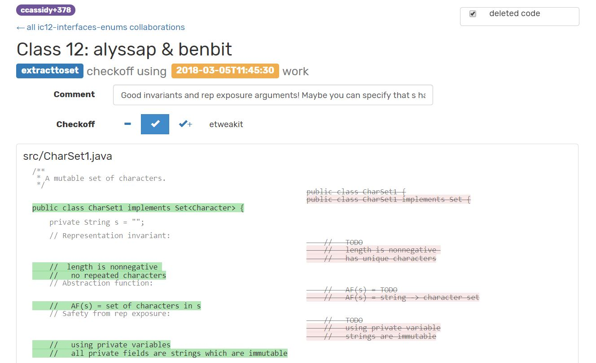

Classroom collaborative coding in Eclipse
Designed for active learning in the classroom, with students working in pairs on small programming exercises.
Built with ShareDB
MIT EECS and the MIT CSAIL Usable Programming Group
Caitlin Cassidy
Glanceable code history Constellation allows instructors to view real-time or snapshotted progress of every student pair. A standard source code diff will show changes from initial to final version, but instructors are often interested in students’ process. In a large class, scrubbing a timeline or scanning multiple diffs for each pair is infeasible, so we developed a glanceable code history visualization that reveals both the changes that appear in students’ final version as well as changes that were discarded or rewritten along the way.
Glanceable Code History: Visualizing Student Code for Better Instructor Feedback
Richard Lu
Student localization and live view By asking students to indicate where they are sitting in the classroom, Constellation can provide live real-time views for teaching staff that are connected to the physical layout. For example, the staff can divide up responsibility for different parts of the classroom. An instructor using their laptop or phone to show only the progress of the handful of groups in their section can reach out and offer help in person as soon as they see a pair is stuck.
6.031 Software Construction Students use Constellation nearly every class meeting as they learn, practice, and receive feedback on software engineering fundamentals. While the instructor leads a discussion after each exercise, teaching assistants check off student participation and write a brief comment to each pair.
{kind=link}
{kind=link}
{kind=link}